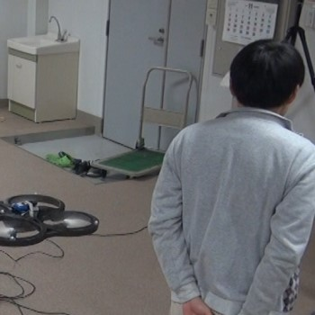
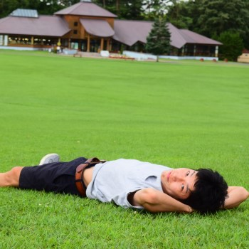
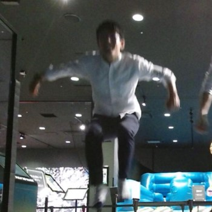
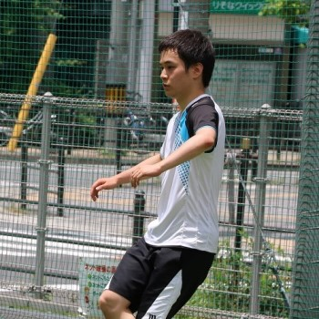
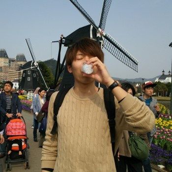

Staffs / スタッフ
佐藤 宏介
Kosuke Sato
Professor / 教授
(全学教育推進機構長、総長参与)
岩井 大輔
Daisuke Iwai
Associate Professor / 准教授
(データビリティフロンティア機構 兼)

松倉 悠
Haruka Matsukura
Assistant Professor / 助教
プンポンサノン パリンヤ
Parinya Punpongsanon
Assistant Professor / 助教

丸子 美生利
Maruko Miyoshi
Administrative Assistant / 事務員
Researcher/Visitor
Takumi Kaminokado
Research Student / 研究生
Tinglin Francis Duan
Visiting Student (Frontier Lab project)
Doctoral Student / 博士後期課程

Mariko Isogawa
D3

Akihiro Nishimura
D1
M2 / 博士前期課程2年

Takumi Kawahara
Takumi Kawahara

Takatoshi Sato
Takuro Takezawa
Naruki Tanabe

Daiki Tone
Kazune Hagino
Ryutaro Mine
M1 / 博士前期課程1年
Tatsukuki Ueda

Kosuke Hiratani
Kosuke Hiratani
Yuichi Fujino
B4 / 学部４回生

Michiya Inagaki
Michiya Inagaki
Yuta Kageyama

Sorashi Kimura
Sorashi Kimura

Yushi Sato

Masatoki Sugimoto
Masatoki Sugimoto

Kohei Morita
Motoki Miyoshi
Kota Matsui
Alumni
After Graduation
国立大助教、
産業技術総合研究所、
NTT研究所、関西電力、
キヤノン、
三菱電機、
三菱重工、
パナソニック、
ソニー、
リコー、
東芝、
富士通、
村田製作所、
横河電機、
オムロン、
インテル、
キーエンス、
ニコン、
マツダ、
クボタ、
JFEスチール、
ダイキン、
きんでん、
コマツ、
TOA、
凸版印刷、
グローリー工業、
シスメックス、
旭化成、
日本IBM、
KDDI、
ソニーモバイル、
日本HP、
新日鉄ソリューションズ、
NECシステムテクノロジー、
TIS、
サイボウズ、
電通国際情報サービス、
ニイウス、
PFU、
ニッセイIT、
野村総研、
フューチャーアーキテクト、
阪神電鉄、
NHK、
朝日放送、
フジテレビ、
毎日放送、
朝日新聞、
ジュピターテレコム、
ミクシィ、
P&G、
島津製作所、
SIE、
CAPCOM